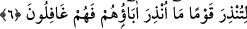

âyette özel olarak zikredilmiş olması, korkutmak ve “Biz seni âlemlere ancak rahmet
olarak gönderdik.” (el-Enbiya 21/107) âyetinin ifâde ettiği gibi rağbet ettirmek
sûretiyle ona (Kur’ân’a) îmana teşviktir.
et-Te’vîlâtü’n-Necmiyye’de der ki: “Allah Teâlâ işâret etmektedir ki Kur’an, herhangi
bir sebeple onu indirmeye muhtaç olmayan azîz (mutlak üstün) ve ganî (hiçbir şeye
ihtiyâcı olmayan) bir zat tarafından indirilmiştir. Bilakis O Rahîm’dir, çok
merhametlidir. O’nun rahmeti Kur’an’ın indirilmesini gerektirmiştir. Çünkü Kur’an
Allah’ın ipidir. Sâdık tâlib bu ipe sarılır, Allah Teâlâ’nın izzet ve azamet duvarlarına
yükselir.”
Keşfü’l-esrâr’da der ki: “Allah yabancılara “Azîz”, mü’minlere ise “Rahîm”dir. Eğer
Rahîm olmadan Azîz olsa, asla kimse O’nu bulamazdı. Azîz olmaksızın Rahîm olsa,
herkes O’nu bulurdu. Aziz’dir, ta ki kâfirler dünyada O’nu bilemesinler. Ukbâda
Rahîm’dir, ta ki mü’minler O’nu görebilsinler.”
Rahmet eli kendi perdesini çekip kaldırdı.
Âşıklar O’na kavuşmanın zevkini tattı.
Hicab ehli perde arkasında kaldı.
Onun firakının belâsında ölüp gitti.
6. Ataları uyarılmamış, bu yüzden kendileri de gaflet içinde kalmış bir toplumu
uyarman için indirilmiştir.
Fetret müddetinin uzun sürmesi ve kendilerinin de kitap ehli olmamaları sebebiyle
“Ataları” yakın babaları “uyarılmamış, bu yüzden kendileri de gaflet içinde kalmış
bir toplumu” bir kavmi Kur’an ile “uyarman” korkutman “için indirilmiştir.”
Bu cümle onların uyarmaya son derece muhtaç olduklarını beyan etmektedir.
Araplar hakkındaki şu âyetler de onların atalarının uyarılmadığını te’yid etmektedir:
“Halbuki biz senden önce onlara bir uyarıcı (peygamber) de göndermemiştik.”
(Sebe, 34/44), “Çünkü ümmîlere içlerinden, kendilerine âyetlerini okuyan, onları
temizleyen, onlara Kitab’ı ve hikmeti öğreten bir peygamber gönderen O’dur.
Şüphesiz onlar önceden apaçık bir sapıklık içindeydiler.” (el-Cum’a, 62/2).
“ ”nın mevsûle veya mevsûfe olması da mümkündür. Buna göre ondan sonraki cümle
“
”nın ikinci mef’ûlü olur. Bu durumda mânâ şöyledir: “İsmail (a.s.) zamanında
büyük dedelerinin uyarıldığı azabla onları uyarman için Kur’an sana indirilmiştir.”
Kureyş kavminin ataları hem uyarılmış hem uyarılmamış gibi çelişkili bir mânâ ortaya
çıkmaması için “ataları” birinci tefsirde yakın ataları, ikinci tefsirde ise uzak ataları
olarak açıklanmıştır. Şüphe yok ki onların önceki atalarına uyarıcı gelmiştir. Yakın